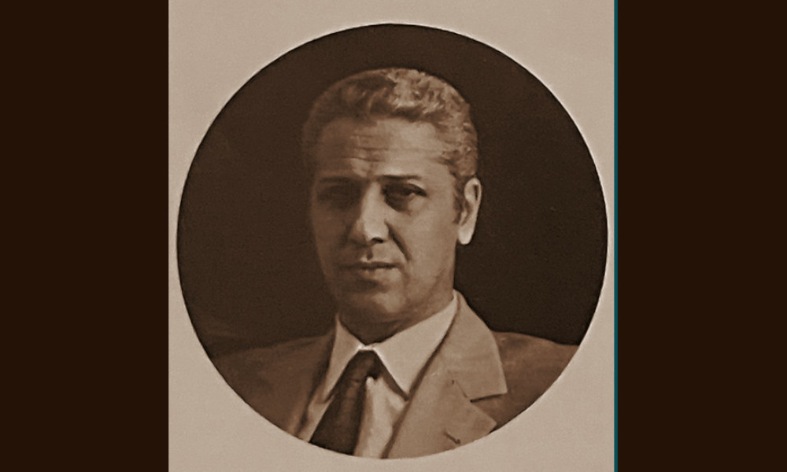

Viancini
Venezia, entità attiva dal 1950 al 1982

- PERSONA
- Ettore Viancini, 1925–1998, antiquario
- IN CATALOGO
- Opere transitate, catalogo della Fondazione Zeri →
Ettore Viancini (1925-1998) nacque a Trieste il 10 gennaio 1925. Conseguita la maturità classica, negli anni Cinquanta iniziò a commerciare in opere d'arte, attività praticata in famiglia anche da suo zio, l'antiquario veneziano Ferruccio Asta, padre di Paolo Asta. Viancini non ebbe mai una galleria aperta al pubblico e svolse la propria attività in uno studio privato. I suoi interessi si rivolsero soprattutto alla pittura del Sei e Settecento di ambito veneziano, genovese, bolognese e lombardo.
Nel corso della sua attività Viancini collaborò soprattutto con Alessandro Orsi e Fabrizio Apolloni (1928-2006) in Italia, e con Nando Peretti all'estero. Ebbe clienti privati a Venezia, Bologna, Roma e Genova, nonché a Parigi e Londra. Tra gli studiosi e storici dell'arte a cui si rivolgeva vi furono Egidio Martini e Ferruccio Mestrovich, esperti di dipinti antichi nonché collezionisti.
Al suo ritiro l'attività fu portata avanti dal figlio Paolo Viancini. Specializzatosi in arte moderna e contemporanea, questi ebbe un negozio a Venezia in via 22 marzo, aperto tra il 1976 e il 1982. Dopo diverse esperienze a Milano, Venezia e Firenze, Paolo si stabilì a Cortina d'Ampezzo dove lavorò fino al 2013. L'archivio fotografico di Ettore Viancini è stato acquisito nel 1998 dalla Fondazione Cini di Venezia.
Altri antiquari
Collaboratori
- Egidio Martini (storico dell'arte)
- Ferruccio Mestrovich (storico dell'arte)
Bibliografia essenziale
- Minervino, F. (1976), Autenticazioni, falsi, esperti, specializzazioni, in «Bolaffiarte», 2, [supllemento al n. 64 di «Bolaffiarte»], pp. 16-22
Interviste
- 10/18/2023, Intervista a Paolo Viancini